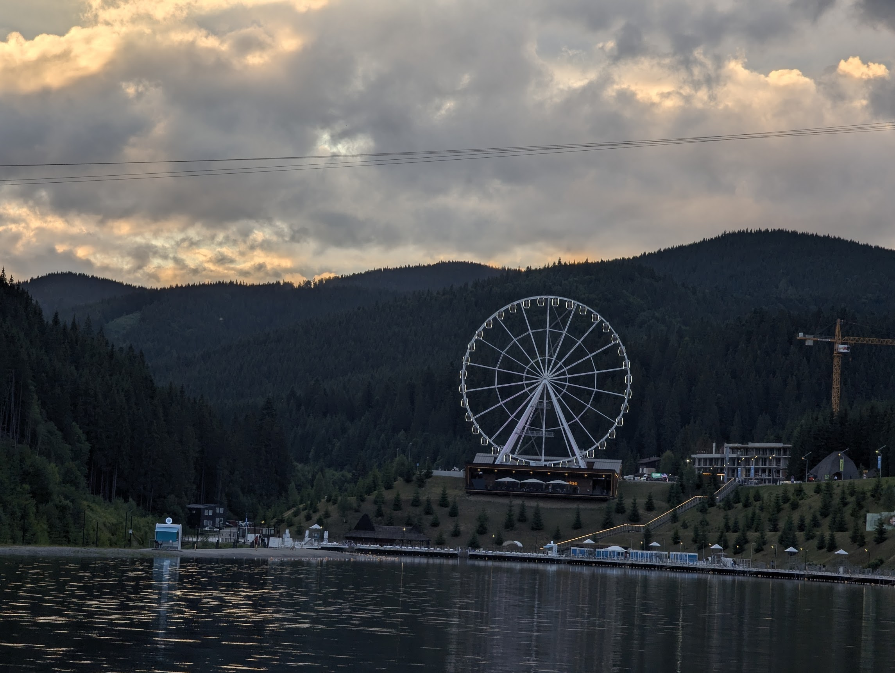
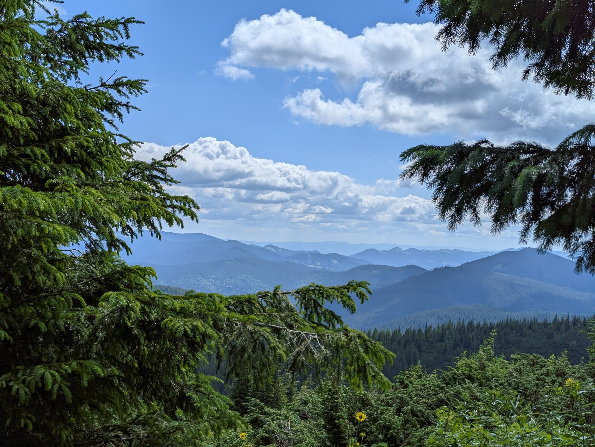
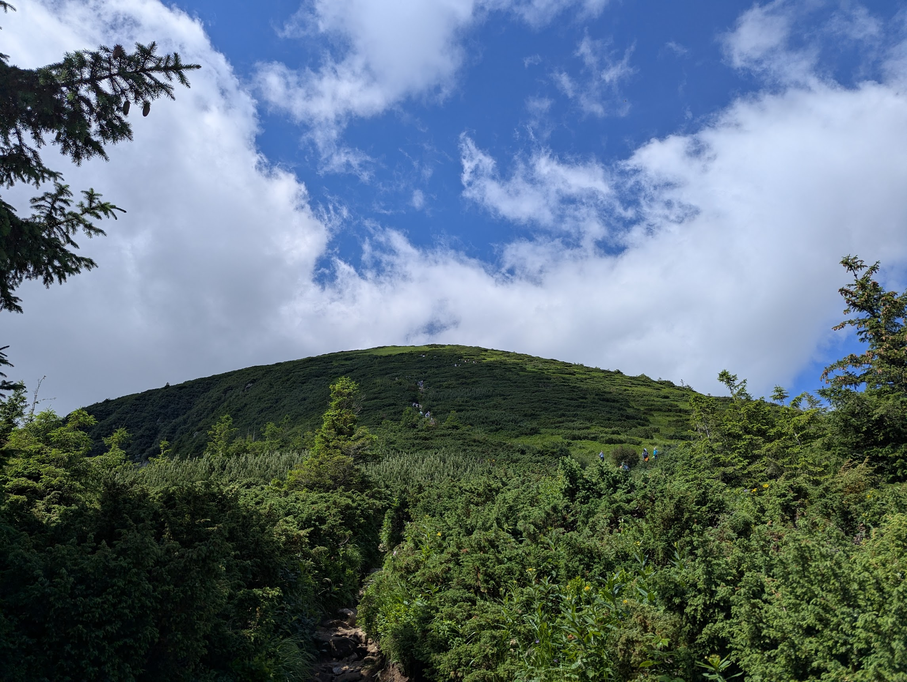
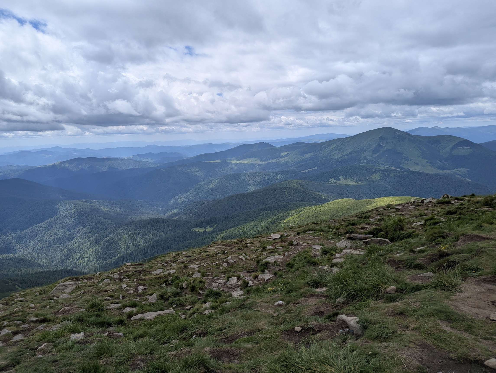

Куди поїхати
Обери категорію й натисни на місце, щоб побачити фото, історію, погоду та карту.


©
OpenStreetMap
contributors. Натисни на мітку, щоб відкрити місце.
Українські Карпати тягнуться через Івано-Франківську, Закарпатську, Львівську та Чернівецьку області. Тут є хребти для справжніх сходжень, затишні села з гуцульською кухнею, сучасні курорти та водоспади, до яких можна дійти за пів години.
Карпати - це ще й жива культура: гуцульські вишивки, трембіти, дерев'яні церкви та ремесла, які передають із покоління в покоління.
Обери категорію й натисни на місце, щоб побачити фото, історію, погоду та карту.
Три маршрути різної складності від легкого до складного. Натисни на маршрут, щоб побачити етапи, дані та карту.
Три найпопулярніші розваги Буковеля. Ціни станом на листопад 2026, графік роботи та актуальні тарифи перевіряй на офіційному сайті курорту.

від 400 грнОглядове колесо в центрі курорту. За даними туристичних сайтів, його висота 45 м, і воно вважається найвищим в Україні. Квиток: 400 грн (звичайний) і 280 грн (пільговий).
 Працює цілий рік
Працює цілий рік
Крита водна розвага за мотивами мультфільму «Мавка. Лісова пісня»: гірки, басейни та спа-зона. Медіа повідомляють, що вечірній квиток коштує вдвічі дешевше за денний. Точну ціну дивись на сайті курорту.
 від 1000 грн
від 1000 грн
Всепогодна санна траса за німецькою технологією, працює і влітку, і взимку. Розташована біля верхньої станції витягу №2. Спуск: 1000 грн для однієї людини, 1500 грн для двох.
Кадри з Карпат. Натисни на фото, щоб відкрити його на весь екран.
Гори змінюються від сезону до сезону. Обери той, що тобі до смаку.

Тане сніг, цвітуть крокуси та рододендрони. Це час для коротких прогулянок і водоспадів, які в цей період найповноводніші. У високих горах ще може лежати сніг.

Найкращий час для Говерли та походів з наметами. Дні довгі, полонини зелені, у селах дозрівають лісові ягоди. Не забувай про грози після обіду.

Букові ліси стають жовтими й червоними, повітря прозоре, туристів менше. Вересень і жовтень ідеальні для фото та спокійних маршрутів.

Відкриті курорти Буковеля, Драгобрату та Славського. Сніг лежить із грудня до березня, а вечорами всюди чекає гарячий чай і глінтвейн.
Маршрут, орієнтовний бюджет і список речей в одному місці.
Готовий план для першої поїздки: від спокійного знайомства з горами до підйому на найвищу точку.
Водоспад Пробій, сувенірний ринок, вечірня прогулянка по Ворохті й вечеря з гуцульськими стравами.
Ранній вихід із Заросляка, вершина вдень, повернення до заходу сонця. Підйом займає 3–4 години.
Колесо огляду, аквапарк Mavka чи родельбан, відпочинок і дорога додому.
Після підйому найкраща нагорода - справжня гуцульська кухня.

Кукурудзяна каша на сметані зі шкварками та бринзою.

Густа каша з кукурудзяної крупи, подається з бринзою.
Овечий сир, який роблять на полонинах за старими рецептами.

Трав'яний збір із чебрецю, м'яти та суниці. Гріє після спуску.
Погода змінюється за годину. Візьми дощовик і теплу кофту навіть улітку.
Вранці менше хмар і гроз. Спускатися краще до заходу сонця.
Забирай сміття з собою і не залишай стежки, щоб не руйнувати схили.
Перевір погоду перед виходом. Якщо збираються грозові хмари, краще повернутися.
Завантаж офлайн-карту, бо зв'язок у горах пропадає. Номер рятувальників: 112.
Повідом рідним маршрут. У групі безпечніше і веселіше.
Що кажуть ті, хто вже побував у Карпатах.
Піднімався на Говерлу два рази за літо. Обов'язково візьміть дощовик, бо погода часто змінюється.
Піднімався на Говерлу на початку осені. Щойно дісталися середини гори, подув такий вітер, що мене ледь на*** не здуло звідти, але так-сяк видерлися.
Були взимку, все дуже сподобалося! Траси були чудово підготовлені, біля підйомника майже не було черг, а поруч продавали дуже смачний глінтвейн.
З червня по вересень, коли немає снігу і стабільна погода. Найкращий місяць - серпень.
На популярні маршрути (Говерла з Заросляка) гід не обов'язковий, стежка позначена. Для складніших маршрутів і взимку гід потрібен.
Залежить від сезону. Найдорожче - у Буковелі взимку, у селах поблизу ціни значно нижчі. Орієнтовний розрахунок дивись у вкладці «Бюджет» розділу «Планування».
Потягом до Івано-Франківська чи Ворохти (є прямі поїзди з Києва та Львова), далі автобусом чи маршруткою до Яремче й Буковеля.



Говерла - висота 2061 м, найвища вершина України. Вона розташована в Чорногірському масиві. Найпопулярніша стежка починається біля села Заросляк і займає приблизно 3–4 години вгору. З вершини відкривається панорама на хребти Чорногори.


Буковель - найбільший гірськолижний курорт України біля села Поляниця. Взимку тут десятки трас різної складності, влітку - велопрогулянки, піші маршрути та відпочинок із видом на гори. Поряд готелі, кафе з гуцульською кухнею та озера.


Синевир - найбільше озеро Українських Карпат на висоті близько 989 м у національному парку «Синевир». За легендою, озеро виникло зі сліз закоханої графської доньки Синь. Посеред води стоїть острівець із сосною, а навколо - стежка для прогулянок.


Драгобрат - найвисокогірніший курорт України, розташований на висоті понад 1300 м. Сніг тут лежить найдовше, тому катання триває до весни. Влітку відсюди стартують маршрути на Свидовецький хребет та до озера Дзембронія.


Ворохта - гірське селище на річці Прут і одна з найстаріших локацій для відпочинку в Карпатах. Звідси починаються маршрути на Говерлу та Петрос, поруч є залізнична станція й гостьові будинки. Також тут відомі дерев'яна церква XVIII століття та традиційні сироварні.

Класичний підйом на Говерлу (2061 м). Зелена стежка від Заросляка добре позначена, пологіша за синю й підходить для першого разу. Достатньо середньої витривалості.


Шпиці (1863 м) входять до масиву Чорногора й відомі скелями висотою від 15 до 50 метрів, схожими на списи чи вила. Маршрут довший за Говерлу, але менш людний.


Хом'як (1542 м) має дахоподібну форму, схожу на спину хом'яка, і лежить у південно-східній частині Горган над селом Татарів. Це популярна вершина вихідного дня, на яку піднімаються навіть родинами.